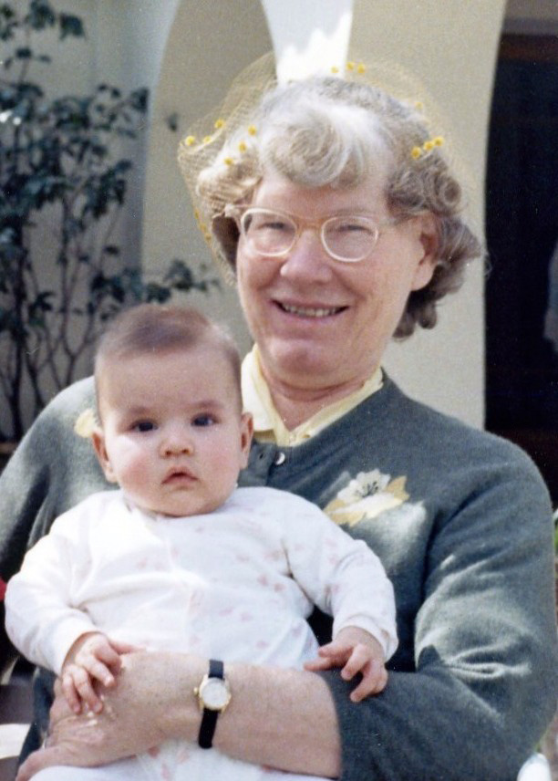
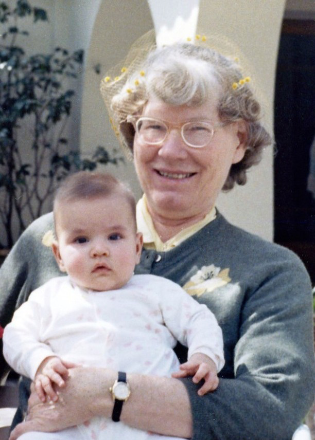

Marie Sinclair GORE
- Born: 27 Mar 1906, New York City, New York County, New York
- Marriage (1): Cosmo "Jack" Lindley SOMERS on 6 Jul 1931 in Mexico City, D.F., Mexico
- Died: 17 May 1969, Mexico City, D.F., Mexico at age 63
- Buried: 1969, (British Cemetery, Panteón Británico), Calz México-Tacuba 1129, Huichapan, Miguel Hidalgo Borough, Distrito Federal, Mexico.

 General Notes: General Notes:
ANCESTRY:
-- Her great, grandfather was Thomas Sinclair Gore (1820-1858), an Irishman who founded the town of Gore's Landing at Rice Lake, Ontario, Canada in 1841 after migrating from Ireland to Canada with his wife Harriette;
-- Her grandfather, William Sinclair Gore (1842-1919), moved from Ontario, Canada to British Columbia, Canada in 1875 (at age 35) while a dominion land surveyor working on the westward railroad surveys. At the age of 38 William was appointed Surveyor-General for the Province of British Columbia, Canada, a position he held twice for 20 years, the record for this post in the British Columbia government. William was responsible for preliminary land surveys conducted at the north end of Vancouver Island and for several years was the Minister of Lands and Words. It was he who prepared the specifications for the present legislative buildings in Victoria. In 1891, William was appointed Deputy Minister/Commissioner of Lands & Works for the Province of British Columbia. William's many interests included bicycling, golf and canoeing. He was Commodore of the Victoria Yacht Club and designed and built class winning yachts. In his later years, he was secretary of the Corporation of British Columbia Land Surveyors.
-- Her father, Thomas Sinclair Gore (1869-1955), was an architect who built and owned the renowned Hotel Geneve in the historic "Zona Rosa" district of Mexico City (see: www.hotelgeneve.com.mx/en/);
-- Her father was also a renowned baritone opera star who gave performances in New York and Mexico;
-- Her mother, Pauline Ingrid Johnson-Gore, was a renowned soprano opera star who gave numerous concert performances throughout the eastern and central United States, as well as in Mexico, known as the "Swedish Nightingale" throughout North America.
-- Her uncle Arthur Sinclair Gore (1879-1976), was a draftsman who started the Electric Blueprint and Map Company in 1907 (at age 28), one of the first engineering supply and blueprint firms, with branches in both Vancouver and Victoria, British Columbia. Arthur Gore's home in Victoria, British Columbia (built in 1912 by famed Canadian artichitect Samuel Maclure) eventually became a designated Heritage Site in 1988;
MOVE TO MEXICO: As a result of her father's interest in designing, building and owning the Hotel Geneve in Mexico City, Marie's parents permanently moved their family from New York to Mexico City in Dec 1906 when Marie was about 8 months old. Marie was their only child.
1926 TRIP TO ENGLAND: At the age of 20, Marie and her parents took a trip to England in 1926. They returned on the White Star R.M.S. Majestic, the largest steamer cruise ship in the world at the time, leaving Southampton, England 20 Oct 1926 and arriving in New York 5 days later. They were among 350 first-class passengers on the ship that included 4,100 total passengers/crew, 9 decks, an indoor swimming pool, elevators, numerous salons, a full orchestra, and hot & cold water in all first-class cabins.
JACK SOMERS: Marie met her future husband Jack while he was on a business trip to Mexico City (his family owned a large tobacco farm in North Carolina). Jack happened to stay at the Hotel Geneve where he met Marie, who lived at the hotel with her parents. Marie and Jack Somers were married on 6 Jul 1931 in Mexico City. They had four daughters while living at the Hotel Geneve.
RESIDENCES:
New York City, New York;
Hotel Geneve, Mexico City;
Los Angeles, California (from around 1923-1926, living with her aunt Bessie Johnson while attending the University of Southern California to study piano and music);
Hotel Geneve, Mexico City;
210 Sierra Aconcagua, Lomas de Chapultepec, Mexico City;
Las Quintas, Cuernavaca, Mexico
NOTEWORTHY: Concert Pianist -- (from grandson G.A. Miller) Marie Sinclair Gore Somers was a gifted pianist. I have very fond memories of listening to her practice for hours at a time in their grand home in Mexico City when I used to visit my grandparents as a child in the 1950's and 1960's. I remember watching her play intricate classical music compositions on her grand piano in her parlor and amazed at how she could read all those black dots on the music sheets. She was a kind woman and I remember her well.
BURIAL: Panteón Inglés (British Cemetery, Panteón Británico), Calz México-Tacuba 1129, Huichapan, Miguel Hidalgo Borough, Distrito Federal, Mexico.
Research Notes:
-- Photos courtesy of G.A. Miller
-- Additional Photos of Marie (Gore) Somers (https://flic.kr/s/aHskAXDhXh)
-- Additional Photos of Hotel Geneve (https://flic.kr/s/aHskbJpChB)
-- Hotel Geneve (www.hotelgeneve.com.mx/en/)
-- U.S. Consular Registration Applications (1916-1925)
-- RMS Majestic: http://en.wikipedia.org/wiki/RMS_Majestic_(1914)
-- Find A Grave, Memorial # 96462819
Marie married Cosmo "Jack" Lindley SOMERS, son of Robert E. Lee SOMERS and Margaret Melinda SOMERS, on 6 Jul 1931 in Mexico City, D.F., Mexico. (Cosmo "Jack" Lindley SOMERS was born on 19 Feb 1903 in Caswell County, North Carolina, died on 25 Nov 1978 in Mexico City, D.F., Mexico and was buried in 1978 in (British Cemetery, Panteón Británico), Calz México-Tacuba 1129, Huichapan, Miguel Hidalgo Borough, Distrito Federal, Mexico..). The cause of his death was Colon Cancer.
|


1909
Mexico City
(Click on Picture to View Full Size)")

1910
(Click on Picture to View Full Size)")
")
")
")

1942
(Click on Picture to View Full Size)")

1942
(Click on Picture to View Full Size)")
")

(front row: Somers daughters with their mother Marie Gore-Somers)
(Click on Picture to View Full Size)") 
